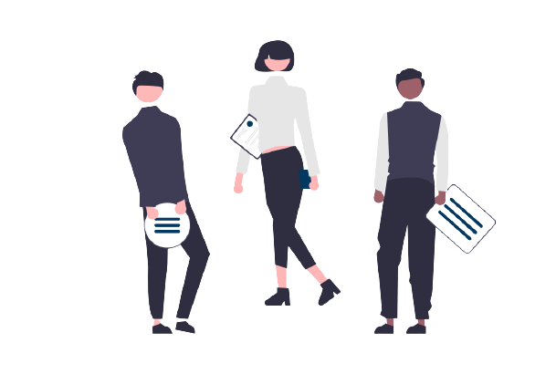

<ion-header mode="md" class="ion-no-border">
  <ion-toolbar>
    <ion-row>
      <ion-col>
        <ion-icon [routerLink]="['/teams-projects-categories']" id="backIcon" name="chevron-back-outline"></ion-icon>
      </ion-col>
      <ion-col>
        <ion-icon id="addMemberIcon" [routerLink]="['/add-member']" name="add-circle"></ion-icon>
      </ion-col>
    </ion-row>
  </ion-toolbar>
</ion-header>

<ion-content>
  <ion-grid>
    <p id="viewTitle">Członkowie zespołów</p>
    <div *ngIf="membersData == 0">
      <p>Nie dodałeś/aś jeszcze żadnej osoby do zespołu? </p>
      
      <p>Naciśnij</p>
      <ion-icon id="arrowIcon" name="arrow-down-outline"></ion-icon>
    </div>
    <ion-list lines="none">
      <ion-item-sliding *ngFor="let memberData of membersData">
        <ion-item>
          <ion-label>
            <ion-row>
              <ion-col size="7">
                  <h2 class="too-long-text" >{{memberData.nameAndSurname}}</h2>
                  <p class="too-long-text">{{memberData.teamName}}</p>
              </ion-col>
              <ion-col size="2">
                  <ion-icon [routerLink]="['/edit-member/', memberData.id]" id="editIcon" name="create-outline"></ion-icon>
              </ion-col>
              <ion-col size="2">
                <ion-button (click)="navigateToMemberDetails(memberData)" fill="clear">
                  <ion-icon id="detailsIcon" name="arrow-forward-outline"></ion-icon>
                </ion-button>
              </ion-col>
            </ion-row>
          </ion-label>
        </ion-item>
        <ion-item-options side="end">
          <ion-item-option (click)="deleteMember(memberData.id)">
            <ion-icon color="primary" slot="icon-only" name="trash-sharp"></ion-icon>
          </ion-item-option>
        </ion-item-options>
      </ion-item-sliding>
    </ion-list>
  </ion-grid>
</ion-content>

<ion-footer>
  <ion-toolbar>
    <ion-router-link [routerLink]="['/add-member']">NOWY CZŁONEK ZESPOŁU</ion-router-link>
  </ion-toolbar>
</ion-footer>
